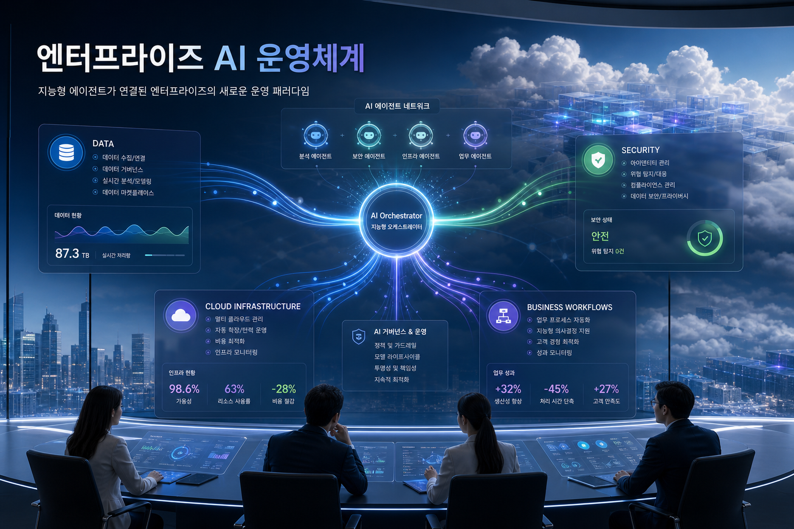
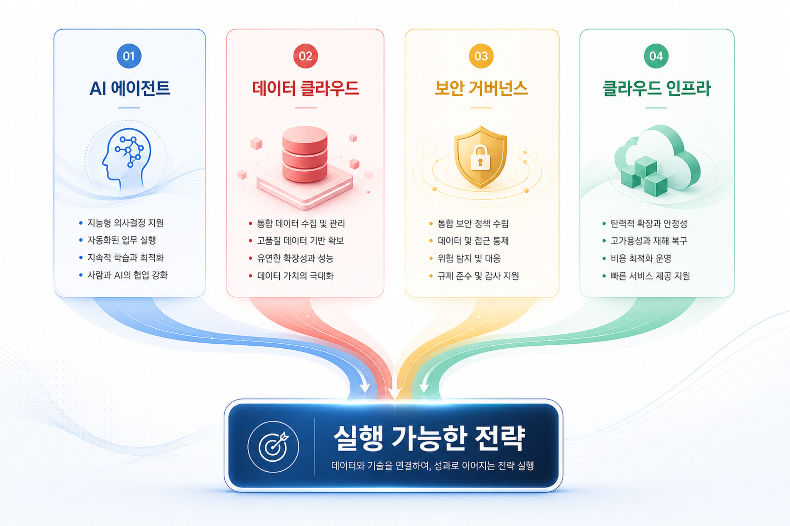
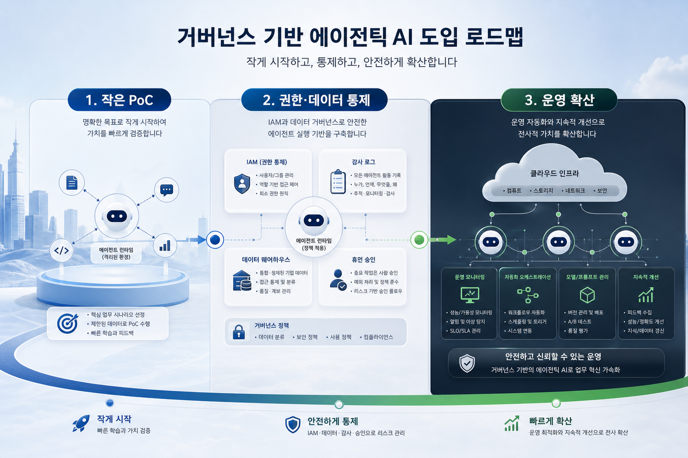

Gemini Enterprise의 플랫폼화
Agent Designer, Skills, long-running agents, Inbox, Projects/Canvas는 현업 자동화와 IT 통제형 개발을 하나의 업무 공간으로 묶으려는 신호입니다.
오늘 6개 Google Cloud Blog 채널에서 신규 저장 대상은 발견되지 않았습니다. 대신 최근 24시간 내 로컬 수집 자료와 최신 GCP 소스를 바탕으로 Enterprise AI·Data·Cloud 관점의 전략 신호를 재구성했습니다.
Gemini Enterprise, Data Agent Kit, Firestore/Firebase/Cloud SQL, Agent Identity·Gateway 흐름은 클라우드가 “모델 사용”을 넘어 에이전트 실행·데이터 연결·보안 거버넌스를 통합하는 방향으로 진화하고 있음을 보여준다.

Agent Designer, Skills, long-running agents, Inbox, Projects/Canvas는 현업 자동화와 IT 통제형 개발을 하나의 업무 공간으로 묶으려는 신호입니다.
데이터 분석은 대시보드 조회에서 IDE/CLI/agent workflow 안의 “실행 가능한 데이터 스킬”로 이동합니다. BigQuery·Looker·Dataplex 계층의 의미가 더 커집니다.
Agent Identity, Registry, Gateway는 shadow AI를 managed AI로 전환하는 핵심 계층입니다. IAM과 감사로그 없이는 production agent 확장이 어렵습니다.
Vibe-coded app 흐름은 앱 개발이 모델 호출만이 아니라 인증, 데이터 저장, 운영 DB, 배포 자동화까지 묶인 end-to-end 경험이 됨을 보여줍니다.

Long-running agent가 현실화될수록 기업은 prompt 품질보다 execution state, queue, approval, retry, audit, data boundary를 먼저 설계해야 한다.
최근 GCP 자료에서 반복되는 메시지는 agent가 단발성 질의응답을 넘어 수 시간~수일 동안 실행되는 업무 주체가 된다는 점입니다. 이 변화는 클라우드 아키텍처에 세 가지 요구를 만듭니다.
agent runtime, sandbox, job state, 실패 재시도, human-in-the-loop checkpoint가 필요합니다.
BigQuery, Cloud SQL, Firestore, Workspace, 외부 SaaS 접근은 agent별 권한과 목적 기반 정책으로 제한되어야 합니다.
출력 품질뿐 아니라 tool call, 비용, latency, 보안 이벤트, 사용자 개입률을 운영 지표로 추적해야 합니다.
| 영역 | 기회 | 먼저 확인할 통제 | 한국 기업 체크포인트 |
|---|---|---|---|
| 업무 에이전트 | 영업/재무/구매/리서치 업무의 장시간 자동화 | Agent Identity, 승인 단계, 실행 로그 | 업무 위임 책임과 감사 대응 기준 정의 |
| 데이터 분석 | Data Agent Kit 기반 self-service analytics | 데이터 카탈로그, row/column 정책, lineage | 개인정보·고객정보의 목적 외 사용 방지 |
| 앱 개발 | Firebase/Firestore/Cloud SQL 기반 빠른 AI app prototyping | 운영 DB 분리, 테스트 데이터, 배포 권한 | 현업 vibe coding과 IT 운영 표준의 충돌 관리 |
| 보안 거버넌스 | Shadow AI를 managed AI로 전환 | IAM, Gateway, DLP, Security Command Center | 금융·제조·공공 수준의 로그 보존과 접근심사 |
No-code Agent Designer와 high-code agent는 경쟁 관계가 아니라 역할 분담입니다. 현업은 반복 업무를 정의하고 IT는 connector, IAM, 배포, 감사 체계를 관리해야 합니다.
agent가 사내 데이터에 접근할수록 Dataplex/BigQuery 정책, 민감정보 분류, 로그 분석 체계가 “선택 기능”이 아니라 prerequisite이 됩니다.
고객 임원에게는 Gemini/Vertex/BigQuery 기능 나열보다 “어떤 업무를 어떤 통제 아래 확산할 것인가”가 더 설득력 있습니다.

한 부서·한 업무·한 데이터 도메인으로 범위를 제한합니다. 성공 지표는 생산성뿐 아니라 승인률, 오류율, 로그 완전성까지 포함합니다.
Agent Identity, IAM role, API gateway, MCP/connector registry, 데이터 분류 정책을 정리해 재사용 가능한 내부 blueprints로 만듭니다.
업무별 agent portfolio를 만들고, 비용·latency·tool call·보안 이벤트를 주간 운영 리뷰 지표로 관리합니다.
agent는 사람보다 더 빠르게 더 많은 시스템을 호출할 수 있습니다. 최소권한, short-lived credentials, 목적 기반 접근 정책이 필요합니다.
Workspace, DB, SaaS, 외부 웹이 한 workflow 안에 섞일 때 민감정보의 이동 경로를 추적해야 합니다.
agent가 만든 문서·분석·의사결정 제안은 소유자, 승인자, 감사 로그를 함께 남겨야 합니다.
long-running agent는 비용이 누적되고 tool loop가 발생할 수 있습니다. budget guardrail과 evaluation loop를 함께 둬야 합니다.
Image Prompt 1 Purpose: Hero visual for an executive Korean blog about Google Cloud enterprise agents and governed AI operating models. Insertion: Hero section after title. Prompt: Create a premium editorial technology illustration for a Korean executive blog: Google Cloud-inspired enterprise AI command center, multiple autonomous agents represented as luminous nodes coordinating across data, security, cloud infrastructure, and business workflows. No logos, no copyrighted marks. Include subtle Korean headline text inside the image: "엔터프라이즈 AI 운영체계". Sophisticated blue, white, green, and violet palette, clean depth, boardroom-to-cloud metaphor, highly legible, 16:9. Ratio: 16:9 Alt: 엔터프라이즈 AI 에이전트 운영체계를 상징하는 클라우드 커맨드 센터 일러스트 Image Prompt 2 Purpose: Infographic visual for trends across AI, data, security, and cloud infrastructure. Insertion: Trend analysis section. Prompt: Generate a clean Korean business infographic image, not a chart screenshot: four connected pillars labeled in Korean "AI 에이전트", "데이터 클라우드", "보안 거버넌스", "클라우드 인프라" with flowing arrows toward "실행 가능한 전략". Premium consulting report style, readable Korean labels created within the image, no logos, Google Cloud-inspired but original palette, light background, 16:9. Ratio: 16:9 Alt: AI 데이터 보안 인프라 트렌드가 실행 전략으로 연결되는 인포그래픽 Image Prompt 3 Purpose: Governance and execution roadmap visual for Korean enterprise adoption. Insertion: Execution strategy / risk section. Prompt: Create a premium editorial roadmap illustration for Korean enterprises adopting governed agentic AI on cloud. Three stages with Korean labels inside the image: "1. 작은 PoC", "2. 권한·데이터 통제", "3. 운영 확산". Include subtle icons for IAM, audit logs, data warehouse, agent runtime, and human approval. No logos, no brand marks, clean high-end executive blog visual, blue and charcoal with green accents, 16:9. Ratio: 16:9 Alt: 한국 기업의 에이전트 AI 도입 로드맵과 거버넌스 단계를 보여주는 이미지